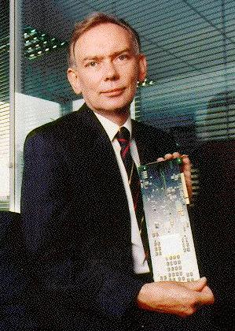

This site is the web home for my reconfigurable computing work as well as a hint about my investment and consultancy activities and private life.
|
 |
q Seven Spires Investments: Business Development Director, £25m early-stage, high-tech investment fund. q Technology Consultant: technology assessments, reconfigurable computing, hardware compilation. Consultancy details q Visiting Professor: Department of Computing, Imperial College, London University q Entrepreneur in Residence: University of Reading q Technology Founder: Celoxica Ltd. q Fellow, Institution of Electrical Engineers |
Over the last fifty years, computers have changed the world we live in. That
was Part One of the history of computing.
The story here is about what computers will change into and what the
consequences are likely to be. Maybe this is Part Two.
The phrase Computing Without Computers is one I started using a few years ago as a shorthand term for the changes that are now affecting the way that we design and deliver computing power. Reconfigurable Computing and Custom Computing are other phrases that cover much the same ground. Its what happens when you turn software into hardware - everything speeds up. Though it may seem paradoxical, everything speeds up because there is no computer around to slow down the computation.
Computers are all sequential, one-step-at-a-time, machines. This is both their strength and their weakness. It is a strength because they are flexible, standard products, easy to program and can deliver a wide range of applications cheaply. It is a weakness because some parts of many applications simply will not run fast enough on any computer. Today’s computers have to be surrounded by a host of other chips which do some of this work – graphics processing, display handling, network interfacing, sound generation, wireless communication and others. These are all tasks that the computer could in principle handle by itself - if it were fast enough. The trouble is that we can’t build computers that are nearly fast enough to do all these tasks. So, we have grown used to a world in which computers run applications software, and they in turn are supported by a range of functions embedded in hardware.
This picture is changing. The changes are small right now, but they are unstoppable and they herald a very different way of both designing and delivering computer capability and the products that require it. The changes will ultimately be massive. They will change the structure of both the electronics and computing industry. They will change the sort of products that people can buy as well as the way that they buy and use them. They will change the way that money is made out of delivering electronic products to customers.
The technological and economic driver for these changes is simply the nature of the silicon industry itself and the wholly extraordinary consequences of Moore’s Law. These forces are moving the focus away from ASIC (application specific chip) technology and towards standard chip products. A big winner in this shift is reconfigurable hardware - and in particular FPGA chips. For suitable applications, they can reduce the million dollar/six month development cost of a new chip to a few dollars and a few days. This is starting to have serious implications for industry.
The sheer size of modern FPGAs makes them costly to design for with
traditional approaches based around conventional Electronic Design Automation
(EDA) techniques. The reasons for this difficulty include the
multi-million-gate sizes now available, the shortage of electronic design
skills, the necessity to design rapidly and reliably to meet market pressures,
and the need for frequent rework to update hardware already in service. The
situation is no worse than designing other types of chips of course, but the
pity of it is that FPGAs enable substantial reductions in the time to implement
a new product. This reduction really cries out for a similar reduction in the
time to design it as well.
The result of these pressures is inevitably on the productivity of design engineers when working on complex systems. When I first started working in this area in 1990, I predicted that the time was coming when a large percentage of digital hardware would simply have to be designed using software engineering - rather than hardware engineering - methodologies. Complexity of the designed object is the basic problem, and Moore’s Law is doubling that complexity every eighteen months. It seemed self-evident that the field of software engineering had already risen to the challenge of producing very complex systems, in relatively short timeframes, with more easily available design skills, and moreover making large profits out of it. So, I felt justified in expecting that the challenge of enabling designers, who may not (or may) have hardware design skills, to design hardware could be met also.
This is a major topic covered in the following pages. Briefly, the major opportunity comes from compiling software directly into hardware – and simultaneously bridging the gap that currently exists between electronic engineering and computer programming. To this end, I created the Handel methodology in 1990 to address the issue of turning hardware design into a programming activity. Later, I formed the Hardware Compilation Research Group at the University of Oxford Computing Laboratory where the Handel-C language was developed. The group operated until I left Oxford in 1999 when I spun the research out as a start-up company.
The following pages describe how I see these changes, and reconfigurable computing in particular, affecting industry and what the significant opportunities are. Although the material here is in no way a commercial advertisement, particular reference will be made to Celoxica Ltd. the company I founded to exploit the Handel-C language. Use the ‘computing without computers’ link below.
These are the links to the rest of this site:
Ian Page, January 2005